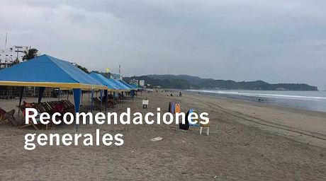

Cuando te encuentres en zonas costeras, presta atención a las posibles alertas por tsunami.
Cuando te encuentres en zonas costeras, presta atención a las posibles alertas por tsunami. |  |
Mensajes para los habitantes de la zona costera.
Cuando te encuentres en zonas costeras, presta atención a las posibles alertas por tsunami.
Elabora un plan familiar que contemple los siguientes tópicos:
Realiza simulacros de evacuación con tu familia tomando en cuenta distintas situaciones: familia junta, separada, de día, de noche, entre semana o fin de semana; establece un punto de encuentro familiar; y, revísalo permanentemente.
Elabora tu mochila de emergencia con las tres A: alimento, abrigo y agua para, al menos, 3 días. Incluye radio con pilas, linterna con pilas, velas y fósforos. Verifica que en tu mochila de emergencia estén copias de tus documentos personales, títulos de propiedad, escrituras, tipo de sangre de cada miembro de la familia y números de teléfonos importantes.
Mantén bidones con agua fresca para beber y alimentos no perecibles.
Lleva en tu auto una mochila de emergencia con las 3 A: alimentos, abrigo y agua. Incluye botiquín, batería extra del celular, herramientas, cuerda para remolcar, filtros de aire y aceite extras.
Incluye en tu mochila los medicamentos que sean esenciales por enfermedades o tratamientos pre existentes o en curso, para al menos una semana.
Infórmate siempre a través de medios oficiales, no hagas caso ni difundas rumores (www.gestionderiesgos.gob.ec, www.inocar.mil.ec, http://www.igepn.edu.ec).
Estar atento a las alertas decretadas por las autoridades que se emiten en función del monitoreo de la amenaza por tsunami.
Mensajes para los habitantes ubicados fuera de la zona de riesgo
Infórmate en canales oficiales (www.gestionderiesgos.gob.ec, www.inocar.mil.ec, http://www.igepn.edu.ec) y si tienes alguna emergencia llama al 9-1-1.
Si tienes familia o amigos que viven en zona de riesgo, estima en qué puedes ayudar.
Si frecuentas zonas costeras por trabajo, estudio, vacaciones u otros, identifica zonas altas fuera de peligro, rutas de evacuación y puntos de encuentro.